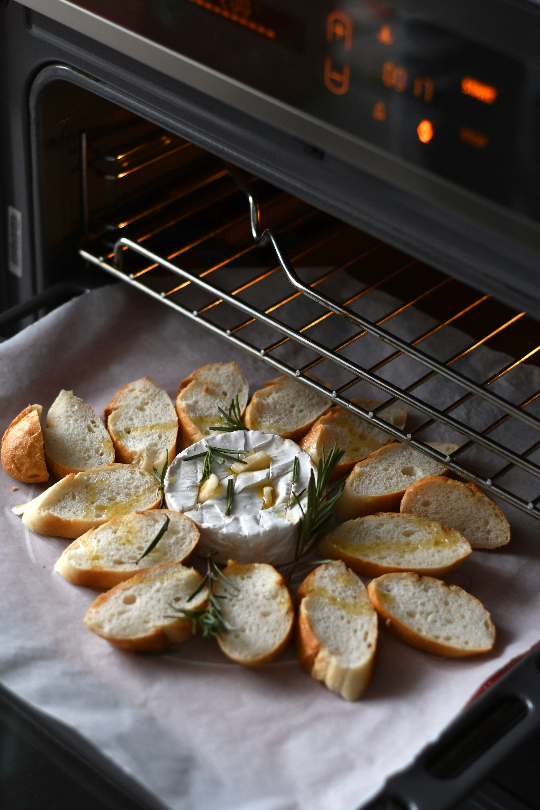

Overview
- According to Google, baking is a cooking method that uses dry heat to prepare food, typically in an oven. It's likely one of the oldest cooking methods. Baked goods are often made from flour or meal derived from grains, and include breads, cookies, pies, pastries, muffins, and rolls.
- There is a lot of science behind baking, including yeast fermentation, caramelization, and more.

My Journey
- My love for baking began when I was a teenager looking for fun hobbies to do. My first creation was an apple buy that I made for Mother's Day, which didn't exactly come out the best.
- Over the years, I have explored different recipes and learned to improvise with the recipes to achieve what I wanted.
- There is a lot of room for improvement, but I'm looking forward to mastering recipes and trying out new ones.
- Some things that I'd love to make one day: cake, cakepops, milhojas, éclair, gingerbread cookies, fruit tarts.